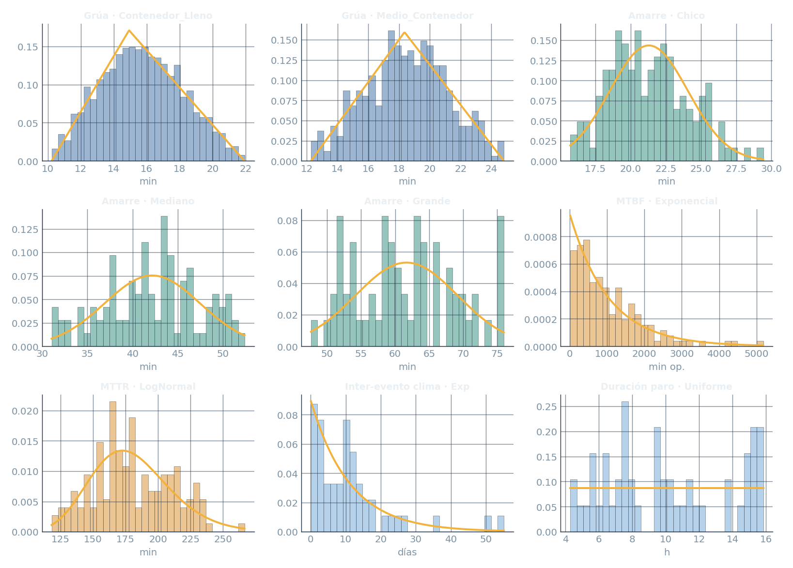
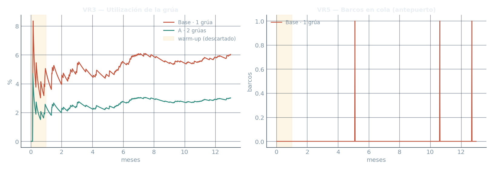
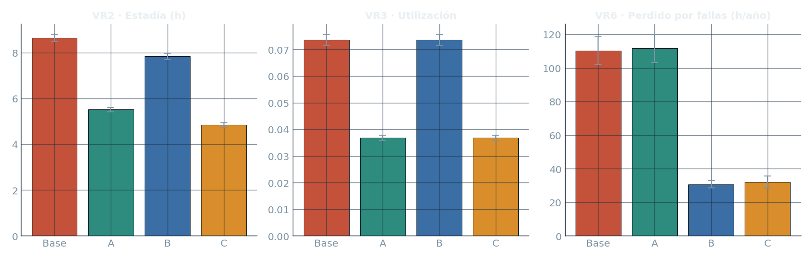
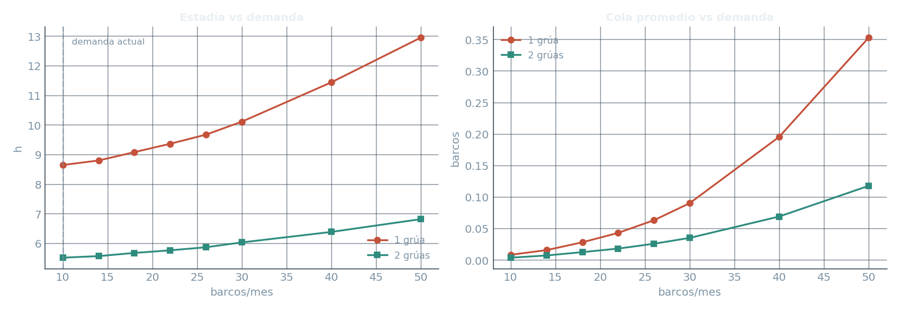
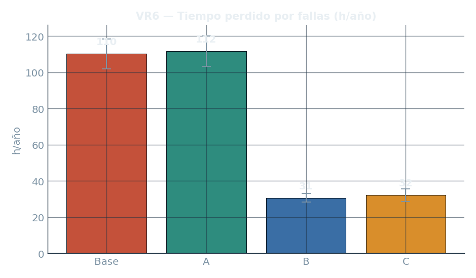

Evaluamos por simulación tres decisiones de gestión del puerto: incorporar una segunda grúa, aplicar una tarifa diferencial por medio-contenedor, e implementar un mantenimiento preventivo de la grúa.
Integrantes: Bolívar, Agustín · Martínez Folica, Nazareno — El notebook (SimPy) es el motor de análisis; el simulador animado, al final, muestra el modelo en vivo.
TERMINAL BAIRES (La Plata) opera un solo muelle y una sola grúa, 24/7 con práctico permanente. Recibe ~10 barcos/mes; ~20% de la carga son medio-contenedores; la grúa pierde ~15% del tiempo operativo por fallas; y el clima adverso frena toda la operación.
Son las tres variables de decisión (VD) — las "palancas" del sistema. La simulación mide su efecto sobre el desempeño del puerto.
Objetivo: evaluar por simulación de eventos discretos si conviene la segunda grúa, si los medio-contenedores justifican una tarifa, y si el mantenimiento preventivo mejora la disponibilidad — para una decisión de gestión informada.
La simulación va a confirmar dos de estas hipótesis… y dar vuelta una: spoiler — el puerto no tiene un problema de capacidad.
Lo que el administrador puede cambiar → definen los 4 escenarios (Base · A · B · C).
| VR1 | Espera en el antepuerto (h) |
| VR2 | Estadía total del barco (h) |
| VR3 | Utilización de la grúa |
| VR4 | Throughput (barcos y cont. / mes) |
| VR5 | Barcos en cola (promedio y máximo) |
| VR6 | Tiempo perdido por fallas (h/año) |
VD = entradas (las decisiones que evaluamos) · VR = salidas (cómo medimos el desempeño de cada escenario). La simulación conecta las palancas con los indicadores.
El barco toma el muelle (único, FCFS) durante todo el trámite. Dos procesos globales lo interrumpen: el clima frena todo; la falla detiene sólo la grúa (en minutos operativos) → por eso ~15% del tiempo operativo es indisponibilidad.
Llegadas, cola FCFS, amarre/desamarre por tamaño, descarga y carga, clima, fallas, y la distinción contenedor / medio-contenedor.
Logística terrestre (camiones, depósito), los trabajadores individuales, ni el detalle físico de la reparación (sólo su duración).
Implementado en Python + SimPy. El núcleo (crane_work) sirve "minutos-grúa" y, en el mismo bucle, resuelve las pausas por clima y las interrupciones por falla.
# crane_work — sirve la carga de una grúa while queda_trabajo: while not clima_ok: # ⛈ pausa yield clima_despejado yield timeout(trabajo) | timeout(ttf) | clima_corte if ttf <= 0: # ⚠ falla (min op.) yield timeout(MTTR()) # reparación ttf = MTBF() # próxima falla
5 RNG independientes (arr · ship · svc · fail · wx) → habilita CRN.
Clima como eventos: Exp(gap) + Uniforme(duración). Suspende toda la operación.
Muelle cap.1 FCFS → amarre → grúas round-robin → desamarre.
12 meses + 1 de warm-up (snapshot) → devuelve VR1…VR6.
Nada de random global: todo sale de los Streams sembrados → reproducible (misma semilla → mismo resultado) y habilita las comparaciones pareadas por CRN.
2000 operaciones de grúa, 300 amarres, 150 fallas y 50 eventos de clima → cada variable se ajusta a una distribución por bondad de ajuste (Kolmogórov–Smirnov).

Histograma de datos + densidad ajustada (línea ámbar). Exponencial · Triangular · Normal · LogNormal · Uniforme — la elegida es la de menor estadístico KS.
Criterio honesto: no se descartan las colas largas de las exponenciales (no son outliers); el KS se usa como criterio comparativo entre candidatas.
El simulador reproduce las anclas conocidas del sistema (corrida de control):
Calidad estadística del experimento:
CRN: los 4 escenarios corren con las mismas semillas → la diferencia es por la política, no por el azar. El warm-up (1 mes) se descarta antes de medir.

Series de una réplica representativa: la franja ámbar es el warm-up descartado; a partir de ahí el sistema está en régimen.
Medimos 6 variables de referencia — VR1 espera · VR2 estadía · VR3 utilización · VR4 throughput · VR5 cola · VR6 perdido por fallas — en 4 escenarios: ●Base · ●A (2 grúas) · ●B (mant.) · ●C (combinado).

Lectura clave: utilización ~7% y cola ~0 → el cuello de botella no es la capacidad. Esto da vuelta la hipótesis H1 y cambia el sentido de las tres decisiones.

Conclusión: la 2ª grúa no resuelve congestión (no la hay); reduce la estadía por paralelizar (● 1 grúa, ● 2 grúas). Aun a 5× la demanda el puerto sigue holgado con una sola. Se justifica sólo si el turnaround más rápido tiene valor comercial, no como capacidad.
Un medio-contenedor consume más tiempo de grúa que uno lleno. El simulador mide ese sobrecosto (tiempo real del medio menos el esperado de un lleno) — no la diferencia de modas, que lo sobreestimaría.
El recargo por medio-contenedor debería cubrir ~2,8 min adicionales de grúa por pieza. Con costo horario de grúa C ($/h), el recargo sugerido por medio ≈ C × 0,046 (más prorrateo de fallas/ociosidad).
Conclusión: el sobrecosto es real, cuantificable y trazable a los datos. Un recargo proporcional es justificable; además desincentiva el formato más costoso de operar. Confirma H2.
Supuesto declarado: MTBF×2,5 y MTTR×0,7. Conviene rehacerlo con datos del proveedor si se consiguen.

Sólo el mantenimiento (●B, ●C) recorta la indisponibilidad; la 2ª grúa sola (●A) no.
Conclusión: ataca directamente la VR6 — la palanca más barata y de mayor impacto sobre la disponibilidad. Prioritaria por sobre una segunda grúa. Confirma H3.
Mayor relación impacto/costo sobre la disponibilidad.
Recargo ≈ C × 0,046 por medio-contenedor.
Sólo si el turnaround tiene valor comercial.
En una línea: el cuello de botella no es la capacidad sino la disponibilidad de la grúa. Mantenimiento + tarifa resuelven más, por menos, que una segunda grúa.
El simulador animado corre el puerto en tiempo real: barcos, grúas, clima y fallas, con el tablero de variables de referencia en vivo. Mismo modelo, misma calibración.
▶ Ver simulación en vivoEl botón abre Simulacion_html/terminal_baires_sim.html (ruta relativa). Funciona igual en local y en GitHub Pages. Las conclusiones del informe se sostienen sobre el notebook; la animación es la maqueta de presentación.